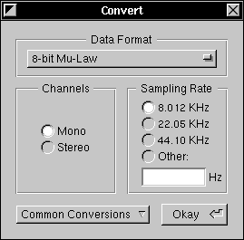

The Convert Panel

The Convert Panel allows you to convert a sound from one sound format to another. The Convert Panel is displayed through the Convert option in the Edit Menu: 
Sound format options include:
 A wide variety of Data Formats, including companded formats (Mu-Law), compressed formats, high-precision formats, and small-size formats.
A wide variety of Data Formats, including companded formats (Mu-Law), compressed formats, high-precision formats, and small-size formats.
 Either Mono or Stereo sound. Converting a Mono sound to Stereo will place the old mono channel into both stereo channels.
Either Mono or Stereo sound. Converting a Mono sound to Stereo will place the old mono channel into both stereo channels.
 Three Sampling Rates: Low (8.012 KHz), High (22.06 KHz), and CD-quality (44.10 KHz). Higher quality sampling rates take up more room. The Convert panel also allows you to specify a custom sampling rate in Hz.
Three Sampling Rates: Low (8.012 KHz), High (22.06 KHz), and CD-quality (44.10 KHz). Higher quality sampling rates take up more room. The Convert panel also allows you to specify a custom sampling rate in Hz.
Some data formats and sampling rates are not playable on Intel machines. For this and other bugs, press here: 
The Convert Panel also provides three Common Conversions: NeXT Microphone (8.012 KHz 8-bit Mu-Law Mono), 16-bit Linear Stereo at 22.05 KHz, and 16-bit Linear Stereo at 44.1 KHz. The 16-bit formats are standard for playback on most machines, and for recording on some Intel machines.